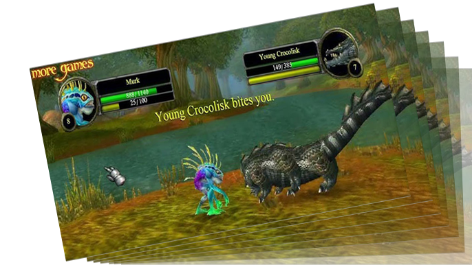
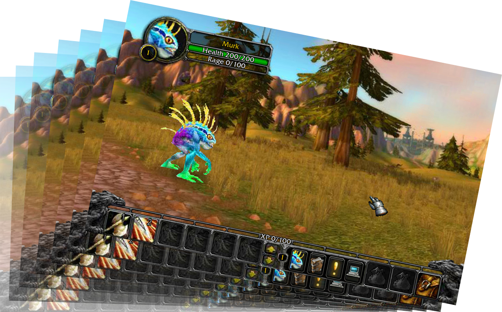
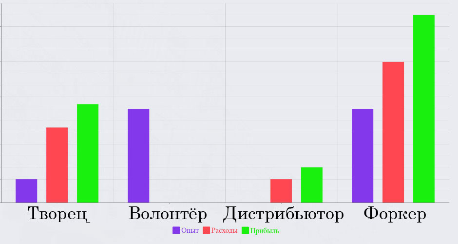

Приветствую, Маэстро.
Возможно ты когда то фармил кроколисков в Murloc RPG

А может быть ты когда то хотел поиграть во второй чаптер легендарной Murloc RPG 2

Но теперь это всё не имеет значения, поскольку теперь ты сможешь создать ЛЮБУЮ игру подобного жанра. Встречай, 1D RPG CONSTRUCTOR, вот собственно и интерактивная версия.
Можешь открыть конструктор в отдельном окне
и попробовать сотворить шедевр самостоятельно, или посмотреть обучающее видео, по работе с конструктором.
Также можешь поиграть в уже созданные игры на нашем конструкторе.
Выбирай, кем хочешь стать в нашем сообществе:
- Творцы- это вольные мастера создающие любые игры, на любой вкус. Являются основным костяком сообщества. Занимают начальную ступень, поскольку обладая любым опытом, и вкладывая небольшие финансовые затраты, могут получить кратно большую прибыль.
- Волонтёры- это идейные вдохновители сообщества, опытные мастера, создающие глобальные игры с большим разнообразием локаций, персонажей, сюжетов и диалогов. Занимают вторую ступень, поскольку должны обладать большим опытом, при этом не затрачивают финансы на билды, и не получают прибыли.
- Дистрибьюторы- это доверенные члены сообщества, получающие значительные скидки на билды, за большие заказы. Также дистрибьюторы могут самостоятельно проводить продажи билдов. Занимают третью ступень, поскольку их прибыль напрямую зависит от количества билдов.
- Форкеры- это опытные программисты, создающие параллельные версии конструктора, и вносящие изменения в механику игры. Занимают четвёртую ступень, поскольку единоразово затрачивают значительную сумму за форк версию, после могут по своему усмотрению распоряжаться и зарабатывать на этой версии ядра конструктора.

Рассмотрим 2 наиболее популярных варианта для создания билда:
- Волонтёры могут бесплатно создавать билды, для этого нужно:
1. Скопировать код вашей игры,
по кнопке в конструкторе "Get project code on clipboard";
2. Вставьте скопированный код в новый текстовый документ, и сохраните его с расширением .js;
3. После нужно зайти на форум, и в теме "Билды волонтёров" прикрепите и отправьте ваш .js файл.
Модераторы проверят ваш проект, и если он будет соответствовать стандартам качества, то мы опубликуем вашу игру, в списке демо игр конструктора, в ближайшее время.
Если ваш проект не соответствует стандартам качества, то игра опубликована не будет.
- Творцы могут создать игру через любого дистрибьютора. Для этого:
1. Скопируйте код вашей игры,
по кнопке в конструкторе "Get project code on clipboard";
2. Выберите любого дистрибьютора из списка наших дистрибьюторов,
опираясь на отзывы и цену за 1 билд каждого дистрибьютора;
3. После перейдите на сайт выбранного дистрибьютора или при отсутствии сайта,
договаривайтесь через почту или телеграмм.
После внесения оговорённой предоплаты и отправки вашего .js файла или кода целиком,
по прошествии оговоренного времени, дистрибьютор вышлет вам ваш билд по почте, или разместит в интернете играбельную версию.